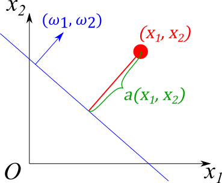

Классификация
Contents
Классификация¶
Рассмотрим задачу классификации точек на плоскости \(Ox_1x_2\). Любую точку на плоскости можно охарактеризовать её координатами \(x_1\) и \(x_2\). Эти координаты и примем за их признаковое описание.
Бинарная классификация¶
Для простоты будем считать, что все точки принадлежат одному из двух классов, а также что имеется выборка из \(n\) точек, для которых известен этот самый класс. Назовем первый класс отрицательным, второй класс — положительным. Поставим в соответствие всем точкам отрицательного класса значение \(y_\mathrm{true} = -1\), а всем точкам положительного класса \(y_\mathrm{true}= + 1\). Тогда известную выборку можно представить в виде следующей таблицы.
\(x_1\) |
\(x_2\) |
\(y_\mathrm{true}\) |
|---|---|---|
\(x_1^1\) |
\(x_2^1\) |
\(y_\mathrm{true}^1\) |
\(\cdots\) |
\(\cdots\) |
\(\cdots\) |
\(x_1^n\) |
\(x_2^n\) |
\(y_\mathrm{true}^n\) |
Здесь верхний индекс соответствует номеру точки.
Необходимо на основе этих данных научиться классифицировать произвольную точку на плоскости, т.е. построить отображение \(f\colon \mathbb{R}^2\to\{-1, 1\}\), которое бы хорошо классифицировало не только точки из известной выборки, но и остальные точки из \(\mathbb{R}\).
Пока не будем уточнять, какой смысл вкладывается в “хорошо классифицировать”.
import os
import numpy as np
import pandas as pd
from matplotlib import pyplot as plt
import seaborn as sns
folder = os.path.join("..", "_static", "lecture_specific", "ml")
plt.rcParams.update({"font.size": 16})
def plot_decision_boundary(classifier, data, ax, title=None, n_points=300):
x_min, x_max = data["x1"].min(), data["x1"].max()
y_min, y_max = data["x2"].min(), data["x2"].max()
delta_x = (x_max - x_min) / 10
delta_y = (x_max - x_min) / 10
x = np.linspace(x_min - delta_x, x_max + delta_x, n_points)
y = np.linspace(y_min - delta_y, y_max + delta_y, n_points)
xx, yy = np.meshgrid(x, y)
df = pd.DataFrame({
"x1": xx.reshape(-1),
"x2": yy.reshape(-1)
})
zz = classifier.predict(df)
ax.contourf(xx, yy, zz.reshape(n_points, n_points), levels=1, cmap="Set2")
sns.scatterplot(
data=data,
x='x1',
y='x2',
hue='y',
s=100,
palette="bwr",
hue_norm=(-1, 1),
ax=ax
)
ax.set_title(title)
Случай линейно разделимой выборки¶
Один из самых простых случаев — когда можно провести прямую (гиперплоскость в общем случае) таким образом, что все точки первого класса окажутся по одну сторону от неё, а все точки второго класса — по другую.
Ниже приводится пример такой выборки.
path = os.path.join(folder, "linearly_separable.csv")
data = pd.read_csv(path)
fig, ax = plt.subplots(figsize=(10, 7))
sns.scatterplot(
data=data,
x='x1',
y='x2',
hue='y',
s=100,
palette="bwr",
hue_norm=(-1, 1),
ax=ax
)
data.head()
| x1 | x2 | y | |
|---|---|---|---|
| 0 | 1.228312 | -0.757178 | -1 |
| 1 | 0.698409 | -1.380295 | -1 |
| 2 | 2.548817 | 2.502258 | 1 |
| 3 | 0.573579 | -1.352979 | -1 |
| 4 | 0.585900 | -1.337457 | -1 |
Из построенной диаграммы рассеяния отчетливо видно, что классы можно отделить друг от друга прямой.
В общем случае прямую можно задать уравнением
а определить с какой стороны от неё находится точка с координатами \((x_1^*, x_2^*)\) можно по знаку величины \(a(x_1^*, x_2^*) = \omega_1 x_1^* + \omega_2 x_2^* + b\).
Значит можно задать классификатор
где \(\mathrm{sgn}\) — функция сигнум.
Чисто теоретически можно подобрать коэффициенты \(\vec{\omega} = (\omega_1, \omega_2)\) и \(b\) в ручную. В ячейке ниже демонстрируется такой классификатор с \(\omega_1=-1\), \(\omega_2=1\) и \(b=0.3\).
class ManualLinearClassifier:
def __init__(self, weights, bias):
self.weights = np.array(weights)
self.bias = bias
def predict(self, x):
y = (self.weights @ x.T + self.bias).to_numpy()
return np.sign(y)
classifier = ManualLinearClassifier([-1, 1], 0.3)
fig, ax = plt.subplots(figsize=(10, 7))
plot_decision_boundary(classifier, data, ax)
Даже такой простой классификатор успешно отделил все точки. Однако если бы это была многомерная задача, то подбирать коэффициенты вручную оказалось бы гораздо сложнее. Хочется каким-то образом обучить эти коэффициенты из данных.
Это можно сделать, опираясь на уже рассмотренную задачу линейной регрессии. Подберем коэффициенты \((\vec\omega, b)\) таким образом, чтобы минимизировать среднее квадратичное отклонение $\( L(X_\mathrm{train}, \vec\omega, b) = \dfrac{1}{n}\sum_{i=1}^{n}(\omega_1 x_1^i + \omega_2 x_2^i + b - y^i)^2 \sim \min_{\substack{\vec\omega\in\mathbb{R}^2 \\ b\in\mathbb{R}}}. \)$
Код в ячейке ниже расширяет класс LinearRegression таким образом, чтобы метод predict возвращал не действительное число из \(\mathbb{R}\), а только его знак.
from sklearn.linear_model import LinearRegression
class RegressionClassifier(LinearRegression):
def predict(self, x):
y = super().predict(x)
return np.sign(y)
regressor = RegressionClassifier()
regressor.fit(data[["x1", "x2"]], data["y"])
fig, ax = plt.subplots(figsize=(10, 7))
plot_decision_boundary(regressor, data, ax)
Видим, что удалось разумно разделить классы на основе линейной регрессии. Тем не менее обычно для решения задач классификации используют другие функции потерь. Одна из самых распространенных функций потерь — перекрестная энтропия, которая в нашей задаче имеет вид
Здесь \(p = \sigma(\omega_1 x_1 + \omega_2 x_2 + b) \in[0, 1]\) интерпретируется в качестве вероятности того, что точка \((x_1, x_2)\) принадлежит положительному классу, а \((1-p)\) — в качестве вероятности того, что эта точка принадлежит отрицательному классу. Функция \(\sigma\) — сигмоида, значение которой в точке \(x\in\mathbb{R}\) определяется формулой
которая принимает значения в интервале \((0, 1)\), монотонно растет и при этом
Это и позволяет интерпретировать значения этой функции в качестве вероятности.
Код в ячейке ниже строит графики сигмоиды, перекрестной энтропии и среднеквадратичной функции потерь.
from scipy.special import expit as sigmoid
from sklearn.metrics import log_loss as cross_entropy_loss
from sklearn.metrics import mean_squared_error
fig, axs = plt.subplots(figsize=(15, 5), ncols=3)
# sigmoid
x = np.linspace(-5, 5)
y = sigmoid(x)
axs[0].plot(x, y)
axs[0].set_title("Sigmoid")
axs[0].set_xlabel("$x$")
axs[0].set_ylabel(r"$\sigma(x)$")
# cross entropy loss
probabilities = np.linspace(0.01, 0.99)
l0 = [cross_entropy_loss([0], [p], labels=[0, 1]) for p in probabilities]
l1 = [cross_entropy_loss([1], [p], labels=[0, 1]) for p in probabilities]
axs[1].plot(probabilities, l0, probabilities, l1)
axs[1].set_title("Cross entropy loss")
axs[1].set_xlabel("$p$")
axs[1].set_ylabel(r"$L(y, p)$")
axs[1].legend(["$y=0$", "$y=1$"])
# mean squared error
y_predictions = np.linspace(-3, 3)
l1 = [mean_squared_error([-1], [y_p]) for y_p in y_predictions]
l2 = [mean_squared_error([1], [y_p]) for y_p in y_predictions]
axs[2].plot(y_predictions, l1, y_predictions, l2)
axs[2].set_title("Mean squared error")
axs[2].set_xlabel(r"$y_\mathrm{pred}$")
axs[2].set_ylabel(r"$L(y_\mathrm{true}, y_\mathrm{pred})$")
axs[2].legend([r"$y_\mathrm{true}=-1$", r"$y_\mathrm{true}=+1$"])
_ = axs[2].set_xticks([-1, 1])
Функция перекрестной энтропии \(L(y, p)\) определена на интервале \((0, 1)\) и в зависимости от значения \(y\) монотонно растёт на этом интервале от 0 до бесконечности (\(y=0\)) или монотонно убывает от бесконечности до 0 (\(y=1\)).
Значение \(p\) интерпретируется в виде предсказанной вероятности какого-то события (в задаче классификации это вероятность того, что классифицируемый объект принадлежит классу с \(y=1\)), а \(y\) считается истинной вероятностью. В связи с этим и рядом других факторов обученные с помощью перекрестной энтропии модели считают вероятностными.
Саму модель, использующую такую функцию потерь, называют логистической регрессией, а метод linear_model.LogisticRegression из библиотеки scikit learn её реализует.
from sklearn.linear_model import LogisticRegression
log_classifier = LogisticRegression()
log_classifier.fit(data[["x1", "x2"]], data["y"])
fig, ax = plt.subplots(figsize=(10, 7))
plot_decision_boundary(log_classifier, data, ax)
Получили другую разделяющую прямую, а значит и другой классификатор. В общем случае нельзя однозначно сказать, какая из функций потерь лучше подойдет для конкретной задачи.
Тем не менее продемонстрируем недостаток функции потерь MSE на чуть более сложных данных. Добавим к данным ещё одну точку положительного класса в глубину этого класса и посмотрим, как отреагирует классификаторы с разными функциями потерь.
outlier = pd.DataFrame({"x1": -3, "x2": 7, "y": 1}, index=[100])
data_with_outlier = pd.concat([data, outlier])
X = data_with_outlier[["x1", "x2"]]
y = data_with_outlier["y"]
log_classifier.fit(X, y)
regressor.fit(X, y)
fig, axs = plt.subplots(figsize=(15, 7), ncols=2)
plot_decision_boundary(regressor, data_with_outlier, axs[0], title="MSE loss")
plot_decision_boundary(log_classifier, data_with_outlier, axs[1], title="Cross entropy loss")
for ax in axs:
ax.scatter(outlier.x1, outlier.x2, s=200, c="r", label="outlier", marker="*")
ax.legend()
Классификатор с MSE функцией потерь резко отреагировал на добавление новой точки, хотя она была бы верно классифицирована и до этого.
Чтобы объяснить этот эффект, рассмотрим величину \(a(x_1^*, x_2^*) = \omega_1 x_1^* + \omega_2 x_2^* + b\), по знаку которой мы оцениваем класс точки \((x_1^*, x_2^*)\). Вектор \(\vec\omega = (\omega_1, \omega_2)\) задаёт нормаль к прямой \(\omega_1 x_1 + \omega_2 x_2+ b = 0\), а значит величина \(a\) определяет насколько далеко точка располагается от разделяющей прямой: чем больше абсолютное значение этой величины, тем дальше эта точка от прямой.

Для заданной прямой и для любой точки \((x_1, x_2)\) из выборки можно ввести отступ \(M(x_1, x_2, y_\mathrm{true}) = y_\mathrm{true} a(x_1, x_2)\). Величина \(M\) положительна для верно классифицируемых точек и отрицательная для ошибочно классифицируемых точек, а абсолютное значение этой величины можно интерпретировать в качестве ступени уверенности классификатора, т.к. чем выше это значение, тем дальше точка находится от разделяющей прямой, а значит тем устойчивее она классифицируется: если разделяющую прямую немного изменить, то точка все равно останется с прежней стороны. Исходя из этого, можно ввести четыре категории точек:
точки с большим положительным значением \(M\), которые устойчиво классифицируются верно;
точки с небольшим положительным значением \(M\), которые неустойчиво классифицируются верно;
точки с небольшим отрицательным значением \(M\), которые неустойчиво классифицируются неверно;
точки с большим отрицательным значением \(M\), которые устойчиво классифицируются неверно;
Возвращаясь к функцией потерь MSE, заметим, что она штрафует за любое отклонения отступа \(M\) от единицы, т.е. точки первой категории тоже штрафуются. Если же обратить внимание на функцию перекрестной энтропии, то она равна 0, только если \(\sigma(M)=0\), т.е. \(M=\infty\). Таким образом с точки зрения этой функции потерь чем выше отступ, тем лучше.
Назовем зазором классификатора расстояние от разделяющей поверхности до ближайшей точки из выборки \(\min\limits_{i=1}^n M(x_1^i, x_2^i, y^i)\). Метод опорных векторов ищет классификатор с максимальным зазором. Функция sklearn.svm.LinearSVC позволяет найти такой линейный классификатор.
from sklearn.svm import LinearSVC
svm_classifier = LinearSVC()
svm_classifier.fit(data[["x1", "x2"]], data["y"])
fig, axs = plt.subplots(figsize=(15, 7), ncols=2)
plot_decision_boundary(svm_classifier, data, axs[0], title="Support Vector Machine")
plot_decision_boundary(log_classifier, data, axs[1], title="Logistic Regression")
Случай не разделимой линейно выборки¶
Рассмотрим другую выборку, которую линейно разделить не выйдет.
path = os.path.join(folder, "circles.csv")
data = pd.read_csv(path)
fig, ax = plt.subplots(figsize=(10, 7))
sns.scatterplot(
data=data,
x='x1',
y='x2',
hue='y',
s=100,
palette="bwr",
hue_norm=(-1, 1),
ax=ax
)
<AxesSubplot:xlabel='x1', ylabel='x2'>
Исходя из диаграммы рассеяния очевидно, что разделить эту выборку прямой не выйдет.
Конструирование признаков.¶
При решении задачи мы решили, что признаками точки будем считать координаты точки в декартовой системе координат. Такой выбор признакового описания точки можно считать произвольным: почему, например, не в полярной системе координат; почему только \(x_1\) и \(x_2\).
В ячейке ниже определяется классификатор RadiusLogisticClassifier, который при обучении и оценивании класса вместо исходных признаков x1 и x2 использует признак радиуса r.
class RadiusLogisticClassifier(LogisticRegression):
def get_radii(self, data):
new_data = pd.DataFrame({
"r": np.sqrt(data["x1"] ** 2 + data["x2"] ** 2)
})
return new_data
def fit(self, data, targets):
new_data = self.get_radii(data)
super().fit(new_data, targets)
def predict(self, data):
new_data = self.get_radii(data)
return super().predict(new_data)
classifier = RadiusLogisticClassifier()
classifier.fit(data[["x1", "x2"]], data["y"])
fig, ax = plt.subplots(figsize=(10, 7))
plot_decision_boundary(classifier, data, ax)
classifier.coef_
array([[-6.48857561]])
Практика показывает, что удачный набор признаков значительно упрощает задачу обучения алгоритма. Процесс составления признакового описания объектов называют конструированием признаков.
Нелинейные классификаторы¶
Поиск подходящего признакового описания требует экспертизы в решаемой задаче. Далеко не всегда очевидно, какие признаки будут полезны для классификации, а какие нет. В качестве альтернативы можно пробовать строить нелинейные классификаторы, которые по своей природе позволяет строить нелинейную разделяющую поверхность.
В ячейке ниже на четырех выборках, три из которых линейно неразделимы, тестируются обучаются три нелинейных классификатора:
метод ближайших соседей;
деревья решений;
нелинейный метод опорных векторов.
from sklearn.neighbors import KNeighborsClassifier
from sklearn.tree import DecisionTreeClassifier
from sklearn.svm import SVC
datasets = [
pd.read_csv(os.path.join(folder, "linearly_separable.csv")),
pd.read_csv(os.path.join(folder, "circles.csv")),
pd.read_csv(os.path.join(folder, "moons.csv")),
pd.read_csv(os.path.join(folder, "spirals.csv")),
pd.read_csv(os.path.join(folder, "quadrant.csv"))
]
models = {
"K nearest neighbors": KNeighborsClassifier(),
"Decision tree": DecisionTreeClassifier(),
"Support vector machine": SVC()
}
n_models = len(models)
n_datasets = len(datasets)
fig, axs = plt.subplots(figsize=(16, 16), nrows=n_datasets, ncols=n_models, layout="tight")
for i, (model_name, classifier) in enumerate(models.items()):
for j, data in enumerate(datasets):
classifier.fit(data[["x1", "x2"]], data["y"])
plot_decision_boundary(classifier, data, axs[j, i])
axs[j, i].xaxis.set_visible(False)
axs[j, i].yaxis.set_visible(False)
axs[0, i].set_title(model_name)
Выбор метода тоже является весьма не тривиальный задачей. Нередко пробуют как можно больше разных и выбирают тот, который демонстрирует лучшие показатели.
Метрики качества¶
До сих пор мы обучали модели на всей выборке, а оценивали качество обученной модели визуально. В реальных ситуациях количество признаков обычно превышает два и визуально оценить качество модели невозможно.
path = os.path.join(folder, "balanced.csv")
data = pd.read_csv(path)
print(data.info())
<class 'pandas.core.frame.DataFrame'>
RangeIndex: 1000 entries, 0 to 999
Data columns (total 11 columns):
# Column Non-Null Count Dtype
--- ------ -------------- -----
0 f1 1000 non-null float64
1 f2 1000 non-null float64
2 f3 1000 non-null float64
3 f4 1000 non-null float64
4 f5 1000 non-null float64
5 f6 1000 non-null float64
6 f7 1000 non-null float64
7 f8 1000 non-null float64
8 f9 1000 non-null float64
9 f10 1000 non-null float64
10 y 1000 non-null int64
dtypes: float64(10), int64(1)
memory usage: 86.1 KB
None
Например, в примере выше у каждого объекта 10 признаков. В таких случаях используются различные метрики, значение которых вычисляется на выборках.
В ячейке ниже загруженная выборка делится сначала на две таблицы X и Y, где X — таблица признаков, на основе которых классифицируются точки, а Y — номера классов этих точек.
Затем каждая из этих таблиц делится на тренировочную и валидационную части.
from sklearn.model_selection import train_test_split
Y = data["y"]
X = data.drop("y", axis=1)
X_train, X_test, Y_train, Y_test = train_test_split(X, Y, train_size=0.7)
В ячейке ниже инициализируются 9 классификаторов, среди которых несколько классификаторов из библиотеки scikit-learn, а несколько наивных классификаторов:
ConstantClassifier— классификатор, который всегда выдает один и тот же класс, вне зависимости от входных данных;RandomClassifier— классификатор, который пытается угадать класс, случайным образом выбирая номер класса.
Далее качество этих классификаторов будет оценивать с помощью разных метрик.
from abc import ABC, abstractmethod
from sklearn.ensemble import RandomForestClassifier
rng = np.random.default_rng()
class CustomClassifier:
"""
abc for custom classifiers
all of them should have methods fit and predict
so they can be used in the same context as sklearn classifiers
"""
def fit(self, *args, **kwargs):
pass
@abstractmethod
def predict(self, x):
raise NotImplementedError()
class ConstantClassifier(CustomClassifier):
def __init__(self, constant=0):
self.constant = constant
def predict(self, x):
return self.constant * np.ones(shape=len(x))
class RandomClassifier(CustomClassifier):
def predict(self, x):
return rng.choice([0, 1], size=len(x), replace=True)
classifiers = {
"always 0": ConstantClassifier(0),
"always 1": ConstantClassifier(1),
"random": RandomClassifier(),
"logistic regression": LogisticRegression(),
"linear SVM": LinearSVC(max_iter=10000),
"nonlinear SVM": SVC(),
"kNN": KNeighborsClassifier(),
"tree": DecisionTreeClassifier(),
"random forest": RandomForestClassifier(),
}
for classifier in classifiers.values():
classifier.fit(X_train, Y_train)
Ошибки первого и второго рода¶
Для произвольного бинарного классификатора на любой выборке можно вычислить следующие значения:
TP(true positive) — количество корректно классифицированных объектов положительного класса;TN(true negative) — количество корректно классифицированных объектов отрицательного класса;FP(false positive) — количество объектов отрицательного класса, для которых классификатор выдал положительный класс;FN(false negative) — количество объектов положительного класса, для которых классификатор выдал отрицательный класс.
\(y_\mathrm{true} = -1\) |
\(y_\mathrm{true} = +1\) |
|
|---|---|---|
\(y_\mathrm{pred} = -1\) |
|
|
\(y_\mathrm{pred} = +1\) |
|
|
На главную диагональ этой таблицы попадают корректно классифицируемые объекты. Все ошибки сконцентрированы на побочной диагонали. При этом ложноположительные ошибки называют ошибками первого рода, а ложно отрицательные ошибки — ошибками второго рода.
Метод sklearn.metric.confusion_matrix принимает на вход массивы истинных классов и выхода классификатора, а возвращает матрицу, схожую с приведенной таблицей. Методом seaborn.heatmap удобно эти данные визуализировать.
from sklearn.metrics import confusion_matrix
def plot_confusion_matrix(ax, y_true, y_pred, title):
matrix = confusion_matrix(y_true, y_pred)
sns.heatmap(matrix, annot=True, ax=ax, cbar=False, cmap="coolwarm", fmt="d")
ax.set_xlabel(r"$y_\mathrm{pred}$")
ax.set_ylabel(r"$y_\mathrm{true}$")
ax.set_title(title)
fig, axs = plt.subplots(figsize=(12, 12), nrows=3, ncols=3, layout="tight")
for ax, (name, clf) in zip(axs.flat, classifiers.items()):
y_pred = clf.predict(X_test)
plot_confusion_matrix(ax, Y_test, y_pred, name)
Такого рода таблицы очень полезны для анализа того, на каких классах чаще возникают ошибки.
В качестве недостатка можно отметить, что в одной такой таблице минимум 4 числа, и не совсем понятно, как сравнивать качество моделей между собой на основе них.
Точность¶
Самая простая метрика — точность классификации, которая соответствует доли корректно классифицированных точек.
Используя ранее введенные обозначения формулу для точности можно записать в виде $\( \mathrm{accuracy} = \dfrac{\mathrm{TP} + \mathrm{TN}}{\mathrm{TP} + \mathrm{TN} + \mathrm{FP} + \mathrm{FN}}. \)$
Её преимущество относительно предыдущих таблиц заключается в том, что это одно всего одно число. Вычислить точность можно методом sklearn.metrics.accuracy_score.
from sklearn.metrics import accuracy_score
def evaluate_accuracy(classifier, X, Y_true):
Y_pred = classifier.predict(X)
return accuracy_score(Y_true, Y_pred)
train_accuracies = {}
test_accuracies = {}
for model_name, classifier in classifiers.items():
train_accuracies[model_name] = evaluate_accuracy(classifier, X_train, Y_train)
test_accuracies[model_name] = evaluate_accuracy(classifier, X_test, Y_test)
metrics = pd.DataFrame({
"train accuracy": pd.Series(train_accuracies),
"test accuracy": pd.Series(test_accuracies)
})
metrics
| train accuracy | test accuracy | |
|---|---|---|
| always 0 | 0.478571 | 0.553333 |
| always 1 | 0.521429 | 0.446667 |
| random | 0.510000 | 0.496667 |
| logistic regression | 0.834286 | 0.833333 |
| linear SVM | 0.834286 | 0.826667 |
| nonlinear SVM | 0.940000 | 0.946667 |
| kNN | 0.958571 | 0.916667 |
| tree | 1.000000 | 0.800000 |
| random forest | 1.000000 | 0.896667 |
Недостаток такой метрики тот же, что и её преимущество: это всего лишь одно число. Например, вычислив точность классификации, мы потеряли информацию о том, какого рода ошибки чаще встречаются.
Несбалансированные выборки¶
Если классы представлены в выборке неравномерно, то метрика точности может оказаться практически бесполезной. В качестве демонстрации рассмотрим следующую ситуацию. Пусть 99% выборки — объекты первого отрицательного класса, а оставшийся 1% — объекты положительного класса. Тогда выдающий всегда отрицательный класс классификатор будет иметь точность 99%, т.к. он будет ошибаться только на объектах положительного класса, коих всего 1%.
Несбалансированные выборки часто возникают при поиска аномалий, медицинских данных, обнаружении атак и т.д. В таких ситуациях принято рассматривать другие метрики. Часто смотрят на метрики precision (точность) и recall (полнота), которые определяются формулами
Смысл этих метрик легко понять, если провести аналогию с медицинским тестированием на редкое заболевание. Пусть положительный класс — множество людей действительно больных заболеванием, а отрицательный класс — остальные люди. Тест может давать положительный (болен) и отрицательный результат (не болен). Тогда
полнота (
recallили чувствительность в медицине) — доля больных, которым тест выдал корректный результат. Чем выше чувствительность (полнота), тем вероятнее этот тест обнаружит больного.точность (
precision) — доля действительно больных пациентов среди пациентов с положительным тестом. Чем выше точность теста, тем выше вероятность того, что пациент действительно болен, если его тест дал положительный результат.вместо точности в медицине используют метрику специфичности теста (\(\mathrm{specificity} = \frac{\mathrm{TN}}{\mathrm{FP} + \mathrm{TN}}\)), которая характеризует в какой степени тест специфичен именно к данному заболеванию.
В ячейке ниже загружается выборка, в которой соотношение положительного класса к отрицательному 1:9.
path = os.path.join(folder, "unbalanced.csv")
data = pd.read_csv(path)
classes_representation = data["y"].value_counts()
fig, ax = plt.subplots(figsize=(5, 5))
labels = ["Negative", "Positive"]
ax.pie(classes_representation, labels=labels, autopct="%.0f%%")
Y = data["y"]
X = data.drop("y", axis=1)
X_train, X_test, Y_train, Y_test = train_test_split(X, Y, train_size=0.7)
В следующей ячейке вычисляются accuracy, recall и precision для того же списка моделей, что фигурировал при обучении на сбалансированной выборке.
для вычисления
precisionиспользуется sklearn.metrics.precision_score;для вычисления
recallиспользуется sklearn.metrics.recall_score.
from sklearn.metrics import precision_score, recall_score
def evaluate_precision(classifier, X, Y_true):
Y_pred = classifier.predict(X)
return precision_score(Y_true, Y_pred, zero_division=1)
def evaluate_recall(classifier, X, Y_true):
Y_pred = classifier.predict(X)
return recall_score(Y_true, Y_pred)
accuracies = {}
precisions = {}
recalls = {}
for model_name, classifier in classifiers.items():
classifier.fit(X_train, Y_train)
accuracies[model_name] = evaluate_accuracy(classifier, X_test, Y_test)
precisions[model_name] = evaluate_precision(classifier, X_test, Y_test)
recalls[model_name] = evaluate_recall(classifier, X_test, Y_test)
metrics = pd.DataFrame({
"accuracy": pd.Series(accuracies),
"precision": pd.Series(precisions),
"recall": pd.Series(recalls),
})
metrics
| accuracy | precision | recall | |
|---|---|---|---|
| always 0 | 0.891667 | 1.000000 | 0.000000 |
| always 1 | 0.108333 | 0.108333 | 1.000000 |
| random | 0.523333 | 0.111486 | 0.507692 |
| logistic regression | 0.940000 | 0.853659 | 0.538462 |
| linear SVM | 0.938333 | 0.868421 | 0.507692 |
| nonlinear SVM | 0.951667 | 0.928571 | 0.600000 |
| kNN | 0.948333 | 0.840000 | 0.646154 |
| tree | 0.930000 | 0.676923 | 0.676923 |
| random forest | 0.953333 | 0.893617 | 0.646154 |
Из этой таблицы видно, что выдающий всегда отрицательный класс классификатор always 0 имеет accuracy равную 89.5%, но нулевую полноту. Построим диаграмму рассеивания для показателей precision и recall по типам моделей.
metrics["model"] = metrics.index
fig, ax = plt.subplots(figsize=(10, 10))
sns.scatterplot(data=metrics, x="precision", y="recall", hue="model", style="model", s=200, ax=ax)
<AxesSubplot:xlabel='precision', ylabel='recall'>